#==================================================#
# Introdução ao R
# data: 15 de setembro de 2023
#==================================================#
#Sintaxe e operações aritméticas ####
#soma - utilizar o operador aritmético "+"
1+2
#subtração - utilizar o operador aritmético "-"
10 - 5 Mini Curso - Introdução ao R
Bem-vindo!
Faça download dos dados para análises aqui!
A Interface do RStudio
No RStudio podemos visualizar 4 janelas (Figura 1), sendo elas:
- Editor: é onde digitamos os códigos. Nele temos um arquivo de texto que chamamos script. Se ela não aparecer, crie um novo script clicando no botão de atalho do canto superior esquerdo como apresentado no exemplo mais adiante.
- Console: é a linha de comandos do R. Os comandos executados aparecem depois do símbolo “
>”, e os resultados também aparecem no console. - Ambiente e história: onde ficam os objetos criados. “História” apresenta linhas de código recentemente utilizadas.
- Output: Apresenta outras informações, como gráficos gerados, arquivos de ajuda etc.

Criando um script
Uma das melhores formas de registrar as análises realizadas para posteriormente executá-las novamente no R é salvando um script com todas as informações e incluindo os comentários após o “#” de forma a organizar e lembrar o que foi feito. O script pode ser salvo com a extensão .R. Abaixo temos um exemplo de script, utilizando o “#”, e também os símbolos de “=” e “-” de forma a delimitar blocos. Observe que tudo que está após os “#” fica realçado da mesma cor pela marcação de sintaxe (Figura 2).
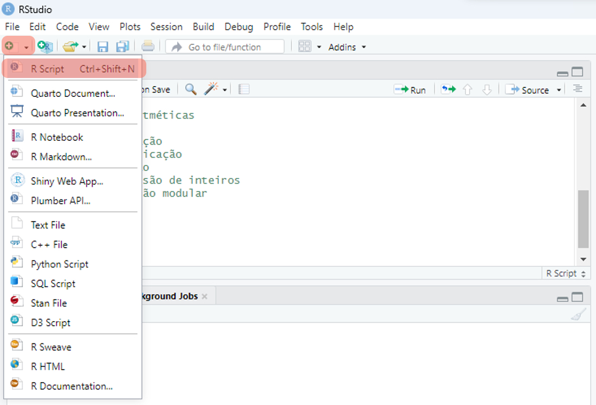
Abaixo temos um exemplo de texto script:
Obs.: no RStudio, após o título de um tópico iniciado com hashtag, você pode usar 4 hashtags seguidos (####) para indicar um tópico principal; também pode utilizar ==== para indicar um tópico secundário e ---- para indicar um tópico terciário.
Sintaxe e operações aritméticas
O R pode ser utilizado para realizar cálculos simples. Para executar um comando no R, faça alguma das duas ações:
- Digite
1 + 2no editor e pressioneCtrl+ENTER.Assim a informação passada no editor será executada no script. - Digite
1 + 2diretamente no console e pressioneENTER.
1 + 2[1] 3O resultado da digitação aparece como na Figura 3 .
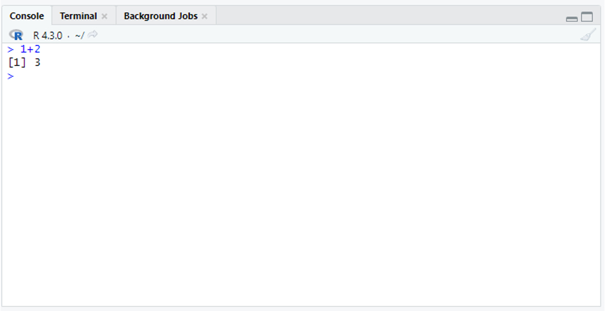
Como resposta, teremos o resultado da operação.
Exemplos de operações aritméticas no R
Você pode realizar as seguintes operações matemáticas e a descrição delas no editor. Depois disso, execute-as, deixando a barra de digitação na linha a ser executada e clicando CTRL + ENTER. Você também pode selecionar todo o trecho a ser executado e executar com CTRL + ENTER:
10 + 5 #soma
10 - 5 #subtração
10 * 5 #multipicação
10 / 5 #divisão
11 %/% 5 #divisão de inteiros
11 %% 5 #divisão modularAo executar o código acima, o resultado será exibido no console Figura 4
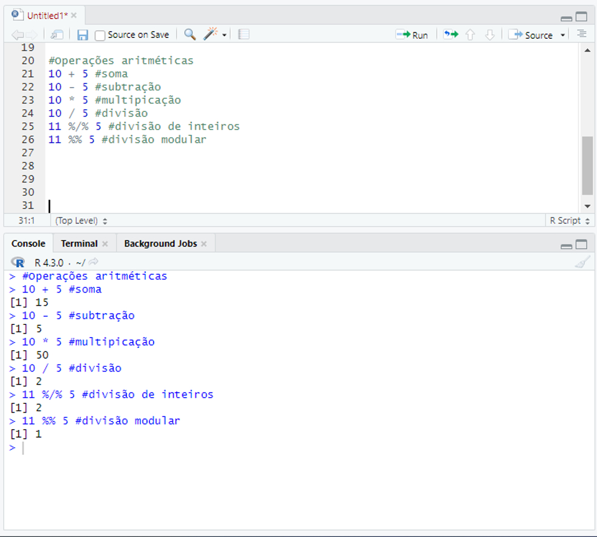
Atribuição: criando objetos
Ao executar o comando executado acima, obtemos o resultado da operação. No entanto esse resultado não é salvo em nenhum local. Na linguagem R, para que nosso resultado fique salvo para uma próxima etapa, devemos criar um objeto.
O R é uma linguagem orientada a objetos. As planilhas, resultados de análise, funções utilizadas para realizar as análises etc, são salvos como objetos. Para criar objetos, utilizamos o operador de atribuição (<-). Assim, podemos criar um objeto no R que vai salvar o resultado no R:
a <- 1 + 2Observe que, diferentemente do passo anterior, não obtivemos um resultado no prompt. Entretanto podemos observar o resultado chamando pelo objeto a que criamos. Para isso, simplesmente escrevemos o nome do objeto (a) no script e clicamos CTRL+ENTER:
a[1] 3Podemos utilizar os símbolos de atribuição como o sinal de menor seguido de hífen, formando uma seta (<-), mas isto em geral também pode ser feito utilizando o sinal de igualdade (=). Após digitar o valor, você poderá utilizar o símbolo de atribuição ao contrário. A função assign() pode ser utilizada para atribuição (obs.: funções são explicadas em um tópico posterior). Todos os comandos abaixo funcionam da mesma forma: atribuem o valor de 1 + 2 ao objeto a:
a <- 1 + 2
a = 1 + 2
1 + 2 -> a
assign("a", 1 + 2)Nomes de objetos Podemos colocar o nome que quisermos em um objeto. No exemplo abaixo criamos um objeto de texto (caracteres) Meu.objeto. Para inserir texto, colocamos este entre aspas (""). Observe que ao chamar o objeto, tivemos erro no primeiro caso. isso se deve ao fato de utilizarmos letra maiúscula no nome do objeto. Assim, vemos que a linguagem R e sensível a diferenças entre maiúsculas e minúsculas.
Meu.objeto <- "Aprender R é fácil"
meu.objeto #retorna uma mensagem de erro,
#pois escrevemos o nome do objeto em minúsculo.
Meu.objeto #retorna o resultado esperadoObserve que todos os objetos criados aparecem na tela superior á esquerda, na aba Environment.
Atenção: Alguns nomes de objeto não são aceitos, por exemplo:
- O nome de um objeto não pode começar por um número;
- O nome de um objeto não pode ser separado por hífen (
-); - Não pode haver espaço no nome do objeto
1meuobjeto #não funciona; nome não pode começar por número
meu-objeto #não funciona
meu objeto #erro -não pode haver espaço no nome
meu.objeto1 #funciona, nome apresenta número mas só no final.Essas limitações podem ser contornadas caso se inclua o nome do objeto entre o sinal ``.
`1Meu objeto-` <- "Aprender R é fácil"
`1Meu objeto-` #funcionouFunções
Um tipo de objeto que temos no R são as funções. Funções são blocos de código que executam uma tarefa específica e podem ser reutilizados em diferentes partes do seu programa. Elas ajudam a organizar o código, tornando-o mais eficiente e fácil de entender. Funções podem receber entradas (argumentos ou parâmetros) e retornar um valor como resultado. Por exemplo podemos usar a função log para calcular o logaritmo de um determinado valor:
log(3)[1] 1.098612log(a) #calcula o logaritmo do objeto a[1] 1.098612Assim calculamos o logaritmo de 3. Entretanto, como sabemos qual é a base do logaritmo? Veremos isso a seguir.
Ajuda de funções
O R apresenta uma documentação abrangente, e para cada função e pacote há uma descrição do seu funcionamento. Essa documentação é importante e permite uma compreensão mais abrangente de como cada função pode ser utilizada. Para entender melhor uma função, podemos realizar pesquisas na ajuda. Isso pode ser realizado de diferentes formas:
help(log)
?logAo observar a ajuda da função log, no tópico “Usage” observamos que podemos utilizar a função log com a seguinte sintaxe:
log(x, base = exp(1))
Assim, se quisermos calcular o logaritmo de 10 na base 10, poderíamos fazer isso de qualquer uma das formas a seguir:
log(x = 100, base = 10)Funções e argumentos
Podemos ver que a função log trabalha com 2 argumentos, que são o valor (x) e a base do logaritmo. Com isso, podemos ver que as funções apresentam a seguinte sintaxe:
função(argumento1 = valor, argumento2 = valor , …)
Vocês puderam observar no exemplo que em geral podemos omitir o nome do argumento caso mantenhamos a posição dos argumentos dentro da função.
Você pode realizar diversas operações com objetos, como mostrado abaixo:
# se colocados na ordem certa, o nome dos argumentos pode ser omitido
log(100, 10)
log(base = 10, 100)Obs.: O objeto a anteriormente tinha o valor 3. Criamos um novo objeto a com valor 10. Desta forma, o valor de a foi alterado.
Listar objetos
Você pode listar todos os objetos disponíveis em seu ambiente de trabalho com a função ls():
ls()[1] "a"Remover objetos
Um objeto pode ser removido utilizando a função rm():
rm(Meu.objeto)
rm(list = ls()) # remove todos os objetos criados.
ls() #character(0) - isso quer dizer que não há mais nenhum objetoEstruturas de dados
Estruturas de dados são formas de armazenar e organizar dados para que possam ser utilizados em cálculos. Alguns tipos de estruturas de dados muito utilizados são:
- Vetores: uma sequência de valores numéricos ou de caracteres (letras, palavras).
- Matrizes: coleção de vetores em linhas e colunas.
- Data frame: planilha de dados.
- Listas: conjunto de vetores, dataframes ou de matrizes. Versátil.
Vetores
São objetos nos quais podemos guardar vários valores. Criamos vetores utilizando a função de concatenação: c(). Vetores numéricos são as estruturas de dados mais simples do R.
Vamos criar um vetor chamado abundancia, com 10 valores. Após criar o vetor com a função c(), podemos executar o comando abundancia, para ver os 10 valores que digitamos:
abundancia <- c(30, 56, 46, 45, 65, 95, 102, 86, 110, 56)
abundancia [1] 30 56 46 45 65 95 102 86 110 56Esses dados correspondem às quantidades de artrópodes coletados em armadilhas de queda (“pitfall”). As cinco primeiras observações foram realizadas em um fragmento florestal e as cinco últimas na matriz do fragmento.
Vamos criar um vetor de caracteres para incluir os nomes correspondentes para cada observação no vetor abundancia:
ambiente <- c("fragmento", "fragmento", "fragmento", "fragmento", "fragmento",
"matriz", "matriz", "matriz", "matriz", "matriz")
ambiente [1] "fragmento" "fragmento" "fragmento" "fragmento" "fragmento" "matriz"
[7] "matriz" "matriz" "matriz" "matriz" Atenção: para cada elemento do vetor de texto, deve ser colocado entre aspas (" ").
Conjuntos de dados (data frame)
Em geral, quando vamos organizar os dados em uma planilha, utilizamos estruturas muito parecidas com o formato data frame. Neste tipo de objeto temos colunas representando variáveis e linhas representando observações. Vamos utilizar a função data.frame() para criar uma planilha com os dados de artrópodes:
artropodes <- data.frame(ambiente, abundancia)
artropodes ambiente abundancia
1 fragmento 30
2 fragmento 56
3 fragmento 46
4 fragmento 45
5 fragmento 65
6 matriz 95
7 matriz 102
8 matriz 86
9 matriz 110
10 matriz 56Organização de dados
A forma de se organizar um conjunto de dados é muito importante, e pode facilitar muito a compreensão da forma como se vai analisar os dados. Existem muitas formas como os dados serão organizados e planilhados, o que pode mudar dependendo da área de pesquisa.
Em um passo inicial, provavelmente os dados serão tabulados em papel ou utilizando uma planilha em um software como Excel, Planilhas do Google ou similar. A organização desses dados muitas vezes depende da área de pesquisa. Entretanto, na hora de se analisar os dados, é necessário aplicar algum sistema de organização que facilite a filtragem, reorganização (data wrangling), preparação de gráficos, estatísticas descritivas e inferência estatística. Podemos chamar esse tipo de conjunto de dados de dados organizados ou tidy data (Wickham, Çetinkaya-Rundel, e Grolemund 2023).
A organização ideal de um conjunto de dados segue alguns princípios , Figura 5:
Cada variável é representada por uma coluna;
Cada observação é representada por uma linha e cada linha representa uma observação;
Cada valor está contido em uma única célula e cada célula contém somente um valor.
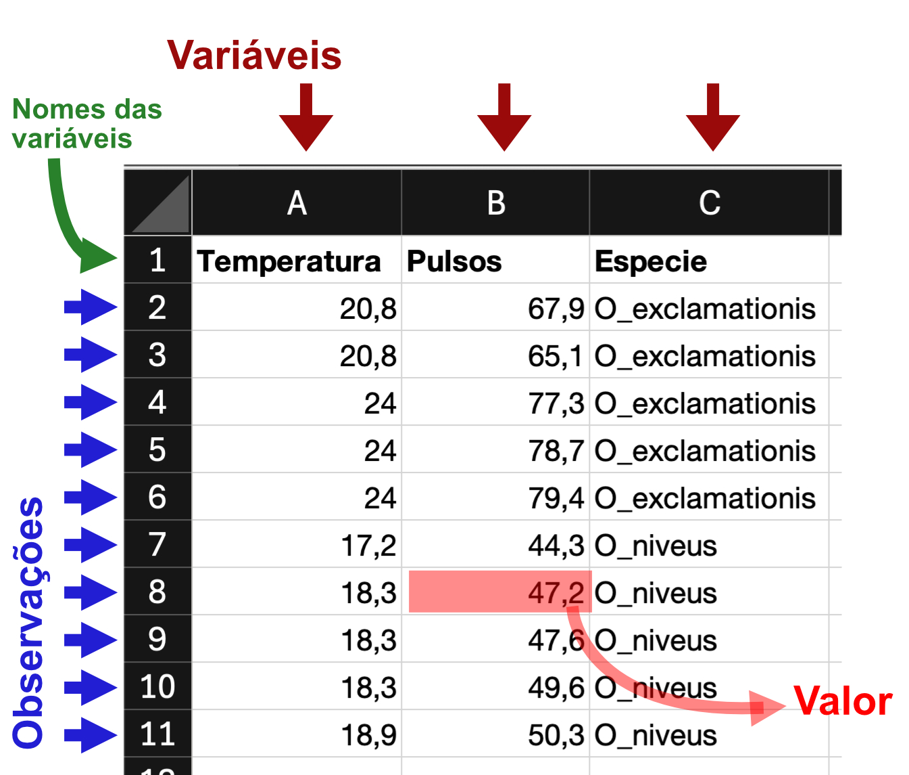
Uma variável é uma característica de interesse medida nas unidades amostrais. Exemplos: peso, altura, sexo, espécie. As variáveis podem ser numéricas quando podem ser medidas em escala quantitativa. As variáveis numéricas podem ser divididas em contínuas, quando podem assumir valores reais dentro de uma escala, ou discretas, quando só podem assumir números inteiros. Além disso, as variáveis podem ser categóricas (ou qualitativas) quando expressam uma classificação de observações em algum agrupamento (por exemplo, sexo ou espécie). As variáveis categóricas podem ser ordinais quando existe uma ordem entre as categorias (por exemplo, ensino fundamental, médio e superior).
Importando arquivos Excel de maneira fácil
Vamos importar o conjunto de dados grilos no arquivo Excel dados_R.xlsx, utilizando as instruções abaixo. O conjunto de dados é adaptado de McDonald (2014) e Walker (1962).
A importação de arquivos Excel pode ser realizada em de forma fácil no RStudio seguindo os seguintes passos (Figura 6).
Acessar aba
Environment;Clicar no ícone
Import Dataset;Ir em
From Excel;Selecionar o arquivo em
Browse;Selecionar a aba do arquivo (quando ouver mais de uma) no campo
Sheet;Criar um nome para o objeto em
Name;Clicar no botão
Import.
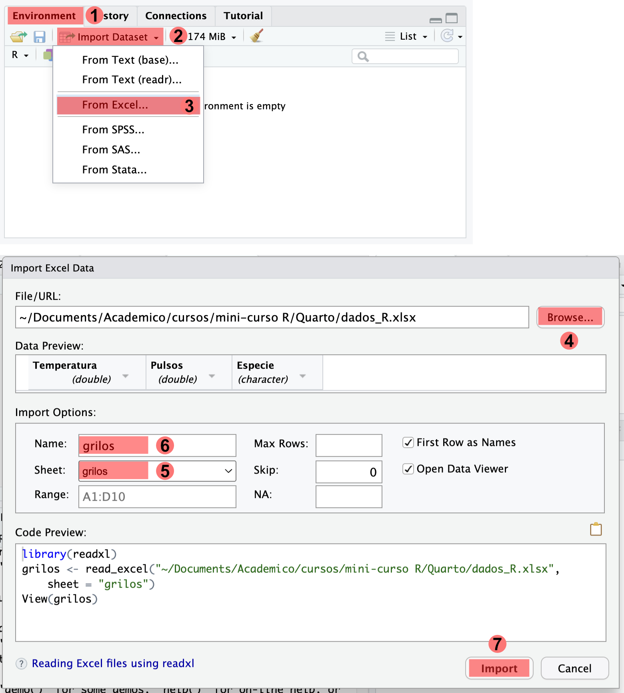
Copiando e colando os dados
Conjuntos de dados podem ser importados para o R pelo método “copia e cola” para isso:
Selecione as linhas e colunas da planilha que deseja copiar;
No R, execute o seguinte comando para colar os dados da área de transferência como um objeto no R:
dados <- read.delim2("clipboard")
#em mac:
dados <- read.delim2(pipe("pbpaste"))Visualização geral do conjunto de dados
Após realizar a importação, é muito importante verificar se não houve problemas na importação. podemos utilizar algumas funções para verificar a estrutura dos dados. Uma função excelente para isso é a função str():
str(grilos)tibble [31 × 3] (S3: tbl_df/tbl/data.frame)
$ Temperatura: num [1:31] 20.8 20.8 24 24 24 24 26.2 26.2 26.2 26.2 ...
$ Pulsos : num [1:31] 67.9 65.1 77.3 78.7 79.4 80.4 85.8 86.6 87.5 89.1 ...
$ Especie : chr [1:31] "O_exclamationis" "O_exclamationis" "O_exclamationis" "O_exclamationis" ...O objeto grilos foi importado formato tibble. Esta é uma versão versão adaptada dos data frames em R que oferece algumas vantagens em relação aos data frames tradicionais, mas em geral podemos trabalhar com eles da mesma forma que fizemos com data frames no capítulo anterior.
Ao observar o str(), é importante verificarmos por exemplo:
Se o número de linhas e colunas está correto;
Se o tipo de variável (caracteres, numéricas) está correto.
Diversas funções já conhecidas podem nos dar algumas informações sobre o conjunto de dados. Para isso, podemos:
Digitar o nome do objeto ou utilizar a função
View()para visualizá-lo (pelo menos as primeiras linhas);utilizar
head()outail()para visualizar as primeiras linhas e últimas linhas do objeto.Utilizar
colnames()para verificar os nomes das colunas (variáveis).Utilizar
ncol(),nrow(), oudim()para verificar o número de linhas e colunas
grilos # visualiza o objeto pinguins no console
View(grilos) # abre o conjunto de dados em uma aba
head(grilos) # ver as primeiras observações
tail(grilos)# ver as últimas observações
colnames(grilos) # ver nomes das colunas
ncol(grilos) # número de colunas
nrow(grilos) # número de linhas
dim(grilos) # Dimensões do objeto (linhas e colunas)Podemos utilizar a função table() para ter informações mais detalhadas sobre variáveis categóricas. Abaixo vamos contar quantas observações (linhas) temos para cada espécie;
table(grilos$Especie)
O_exclamationis O_niveus
14 17 Análise exploratória
Estatísticas descritivas
Vamos calcular estatísticas descritivas para a coluna correspondente à quantidade de pulsos:
grilos$Pulsos Utilizaremos as seguintes funções para calcular as estatísticas descritivas:
mean(): cálculo da média;median(): cálculo da mediana;var(): cálculo da variância;sd(): cálculo do desvio padrão;summary(): cálculo de diversas estatísticas descritivas.
mean(grilos$Pulsos ) #média[1] 72.8871median(grilos$Pulsos )#mediana[1] 76.2var(grilos$Pulsos ) #variância[1] 286.0725sd(grilos$Pulsos) #desvio padrão[1] 16.91368summary(grilos$Pulsos) #mínimo, máximo, mediana, média e 1º e 3º quartis Min. 1st Qu. Median Mean 3rd Qu. Max.
44.30 59.45 76.20 72.89 85.25 101.70 Cálculo de várias estatísticas descritivas por grupo
Como temos medidas para espécies diferentes, podemos comparar as médias de pulsos entre as espécies. Para isso, podemos utilizar a função tapply().
#média por espécie
tapply(grilos$Pulsos, grilos$Especie, mean)O_exclamationis O_niveus
85.58571 62.42941 #desvio padrão por espécie
tapply(grilos$Pulsos, grilos$Especie, sd)O_exclamationis O_niveus
11.69930 12.95684 O conjunto de pacotes tidyverse apresenta ferramentas interessantes para análise de conjunto de dados grandes. Para isso é preciso instalar o pacote, clicando em tools:install Packages e procurando pelo pacote ou executando o comando:
install.packages("tidyverse") #instalar o pacoteApós instalado o pacote, o tidyverse deve ser carregado com a função library().
library(tidyverse) #abrir o pacote── Attaching core tidyverse packages ──────────────────────── tidyverse 2.0.0 ──
✔ dplyr 1.1.4 ✔ readr 2.1.5
✔ forcats 1.0.0 ✔ stringr 1.5.1
✔ ggplot2 3.5.2 ✔ tibble 3.3.0
✔ lubridate 1.9.4 ✔ tidyr 1.3.1
✔ purrr 1.1.0
── Conflicts ────────────────────────────────────────── tidyverse_conflicts() ──
✖ dplyr::filter() masks stats::filter()
✖ dplyr::lag() masks stats::lag()
ℹ Use the conflicted package (<http://conflicted.r-lib.org/>) to force all conflicts to become errorsgrilos %>%
group_by(Especie) %>%
summarise(media = mean(Pulsos), DP = sd(Pulsos))# A tibble: 2 × 3
Especie media DP
<chr> <dbl> <dbl>
1 O_exclamationis 85.6 11.7
2 O_niveus 62.4 13.0Este código utilizou o operador “pipe” %>% que permite concatenar uma função após a outra de forma mais clara do que utilizando a notação tradicional. A partir dos dados pinguins, as amostras foram agrupadas pela variável especie com a função group_by(), e depois summarise() para calcular estatísticas descritivas.
Gráficos
O R apresenta ferramentas excelentes para a preparação de gráficos. Diversos pacotes também podem ser usados para aprimorar os gráficos. Neste curso, iremos aprender a fazer gráficos com foco no pacote ggplot2 do conjunto de pacotes tidyverse.
As capacidades gráficas do R podem ser expandidas de forma expressiva com a utilização de pacotes. Um O pacote ggplot2 permite a preparação de gráficos com qualidade de publicação de maneira fácil. O pacote utiliza uma linguagem diferente da forma tradicional para a elaboração de gráficos no R, conhecida como gramática dos gráficos (Wilkinson e Wills 2005). No ggplot2, cada elemento gráfico é adicionado como uma camada.
Em geral, a estrutura do gráfico no ggplot2 vai seguir uma estrutura geral, na qual vamos adicionando complexidade para os gráficos em diferentes camadas. As camadas podem ser adicionadas utilizando funções:
Criar novo ggplot: isso pode ser realizado utilizando a função
ggplot(). Nela podemos adicionar como argumentos o conjunto e dados a ser utilizado e também a estética (aesthetics; funçãoaes()).Adicionar a estética (aesthetics): é adicionada pela função
aes(). Os argumentos a serem adicionados variam dependendo do gráfico, mas podm incluir as variáveis a serem plotadas nos eixos (argumentosx =ey =), cores e preenchimentos (col =efill =), formato de pontos ou tipos de linhas (pch =elinetype =) ou fatores de agrupamento (group =).Adicionar geometria (geom): a geometria definiria o tipo de gráfico, como gráficos de barras (
geom_bar()), histogramas(geom_histogram()) boxplot (geom_boxplot()), gráficos de dispersão (geom_point())Parâmetros adicionais: outros parâmetros podem ser adicionados. Eles podem alterar características como títulos (
ggtitle()), etiquetas dos eixos (xlab()eylab()), ou temas (funçõestheme_…()).
install.packages("ggplot2") # instalar o pacote
library(ggplot2) #abrir o pacoteGráfico de dispersão (scatterplot)
Gráficos de dispersão servem para ver a relação entre duas variáveis contínuas, sendo que uma é poltada no eixo \(x\) e a outra no eixo \(y\). no r básico, esse tipo de gráfico pode ser feito com a função plot():
plot(Pulsos ~ Temperatura, data = grilos)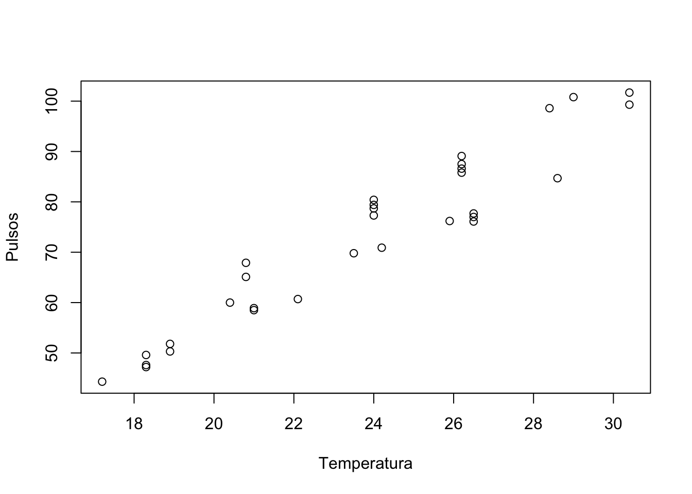
O ggplot2 permite a confecção de gráficos mais avançados.
ggplot(grilos, aes(y = Pulsos, x = Temperatura, col = Especie))+
geom_point()+
theme_light()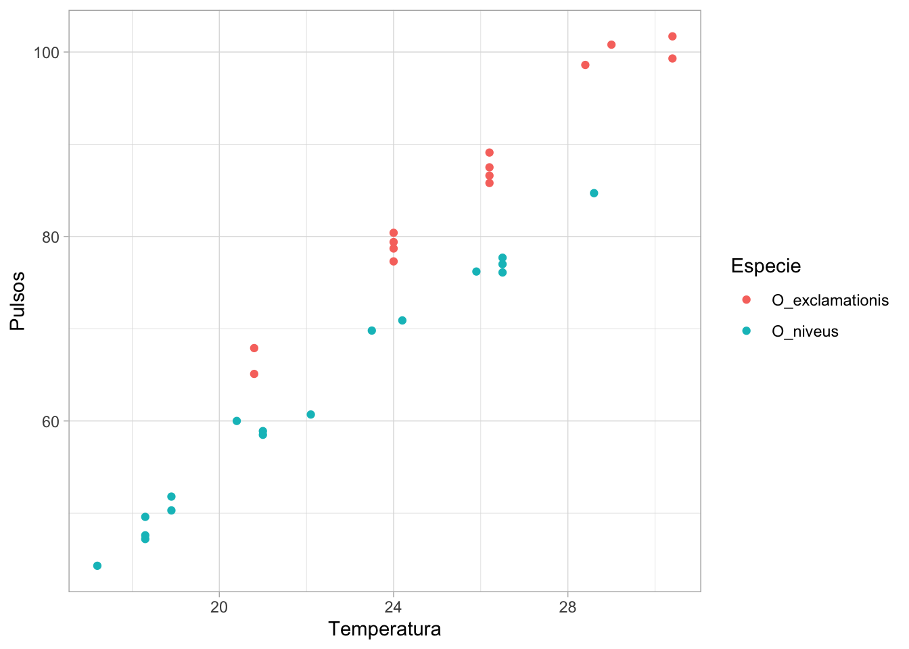
Boxplots
Boxplots são interessantes para comparar grupos. As caixas representam os valores mínimos e máximos (excluindo valores extremos), os quartis superior e inferior e a mediana. Vamos utilizar um boxplot para comparar os pulsos entre as espécies com a função boxplot().
boxplot(Pulsos ~ Especie, data = grilos)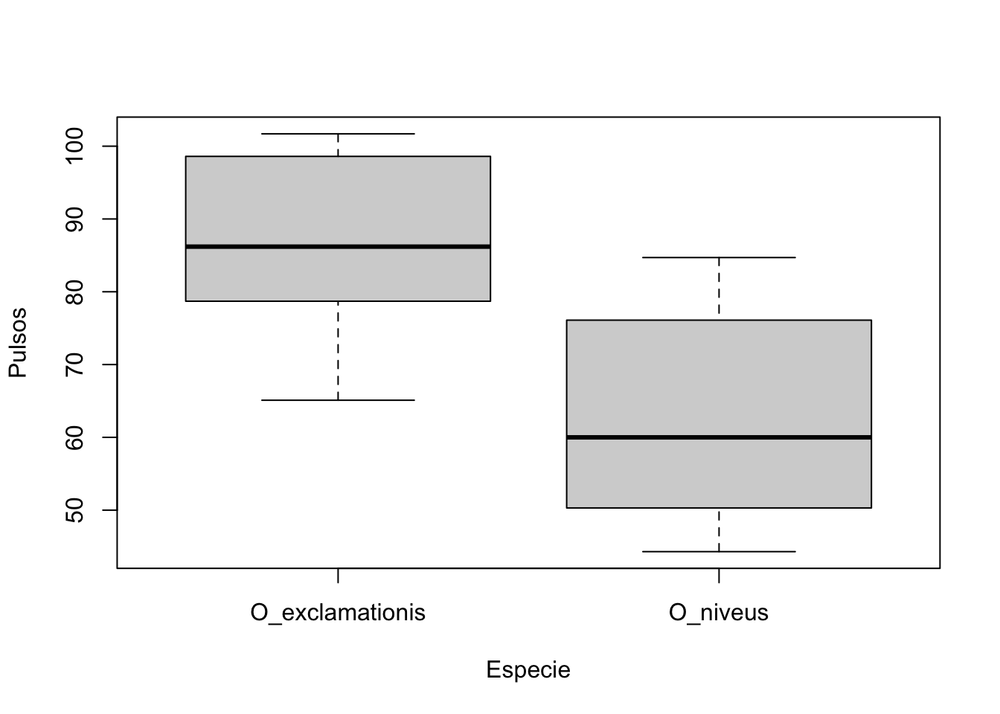
isso pode ser feito no ggplot2:
ggplot(grilos, aes(y = Pulsos, x = Especie))+
geom_boxplot()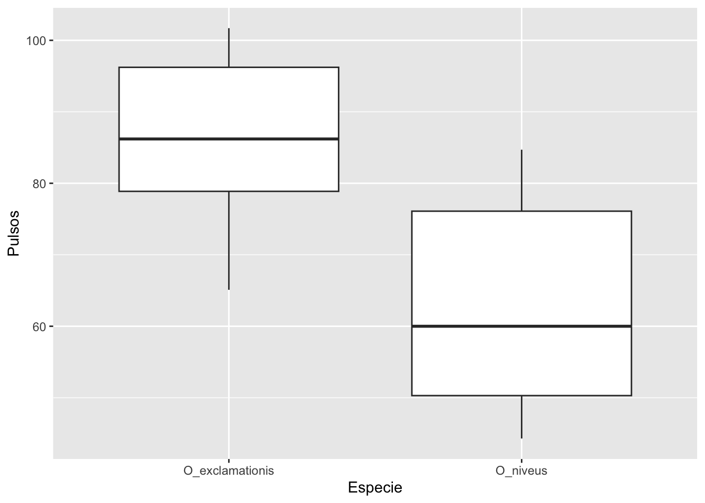
Inferência estatística utilizando modelos lineares
Teste-T
O teste-t pode ser utilizado para comparar dois grupos. Vamos realizar um teste-t para avaliar se há diferenças entre o número de pulsos entre as espécies de grilos. Nesse caso, temos uma variável de interesse (variável resposta) que é o número de pulsos e uma variável preditora que é a espécie.
Testamos as seguintes hipóteses:
Hipótese nula (H₀): não há diferença na média de pulsos entre as duas espécies.
Hipótese alternativa (H₁): existe diferença (pode ser para mais ou para menos).
t.test(Pulsos ~ Especie, data = grilos)
Welch Two Sample t-test
data: Pulsos by Especie
t = 5.2236, df = 28.719, p-value = 1.401e-05
alternative hypothesis: true difference in means between group O_exclamationis and group O_niveus is not equal to 0
95 percent confidence interval:
14.08583 32.22677
sample estimates:
mean in group O_exclamationis mean in group O_niveus
85.58571 62.42941 O resultado mostra:
t = 5.22 → valor do teste, quanto maior, mais evidência contra H₀.
p-value = 0.000014 → extremamente baixo (< 0.05), ou seja, rejeitamos a hipótese nula. Há diferença significativa entre as médias.
Intervalo de confiança (95%) = [14.09 ; 32.23] → a diferença média esperada está entre 14 e 32 pulsos. Como o intervalo não inclui 0, reforça que as médias são de fato diferentes.
Médias: O_exclamationis: média ≈ 85,6 O_niveus: média ≈ 62,4 → O_exclamationis apresenta em média cerca de 23 pulsos a mais que O_niveus.
Desta forma dizemos que há diferenças significativas entre as duas espécies. Podemos ilustrar isso com o boxplot que fizemos anteriormente.
Regressão linear
A regressão linear permite avaliar a existência de relação entre variáveis contínuas. Nesse caso, temos nossa variável independente (variável resposta) e uma ou mais variáveis preditoras. Para análises de regressão linear podemos ajustar um modelo linear para explicar a quantidade de pulsos em relação à temperatura com a função lm():
grilos.mod1 <- lm(Pulsos ~ Temperatura, data = grilos)
grilos.mod1
Call:
lm(formula = Pulsos ~ Temperatura, data = grilos)
Coefficients:
(Intercept) Temperatura
-27.948 4.243 Aqui observamos o intercepto, que representa o valor esperado de \(y\) quando \(x=0\), e a inclinação, que indica quanto \(y\) se altera a cada unidade adicionada em \(x\).
Podemos verificar o sumário do modelo:
summary(grilos.mod1)
Call:
lm(formula = Pulsos ~ Temperatura, data = grilos)
Residuals:
Min 1Q Median 3Q Max
-8.7044 -2.5789 -0.4466 4.5353 7.5916
Coefficients:
Estimate Std. Error t value Pr(>|t|)
(Intercept) -27.9476 5.5937 -4.996 2.56e-05 ***
Temperatura 4.2431 0.2325 18.251 < 2e-16 ***
---
Signif. codes: 0 '***' 0.001 '**' 0.01 '*' 0.05 '.' 0.1 ' ' 1
Residual standard error: 4.868 on 29 degrees of freedom
Multiple R-squared: 0.9199, Adjusted R-squared: 0.9171
F-statistic: 333.1 on 1 and 29 DF, p-value: < 2.2e-16Esses resultados apresentam as seguintes informações:
Equação ajustada: \(Pulsos=−27.95+4.24×Temperatura\).
Intercepto: -27,95 → valor esperado de pulsos quando a temperatura é zero (não tem interpretação biológica direta aqui, mas é parte do modelo).
Inclinação: 4,24 → a cada aumento de 1 °C, espera-se em média um aumento de 4,2 pulsos.
Significância: Tanto o intercepto (p = 2,56e-05) quanto a inclinação (p < 2e-16) são altamente significativos (***). Isso significa que a temperatura tem efeito estatisticamente forte sobre o número de pulsos.
R² = 0,92 (ajustado = 0,917) → o modelo explica cerca de 92% da variação no número de pulsos.
Podemos observar este resultado no gráfico:
plot(Pulsos ~ Temperatura, data = grilos)
abline(grilos.mod1)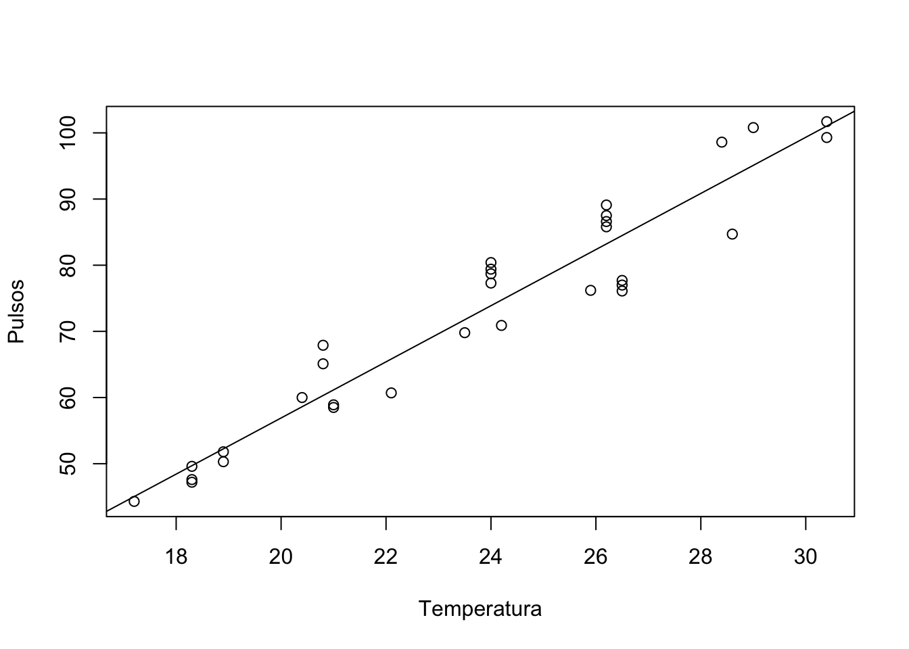
ANOVA
A análise de variância é como se fosse uma extensão do teste-t para quando comparamos as médias de mais de dois grupos. Nesse caso temos uma variável resposta contínua e uma variável preditora categórica com três níveis ou mais.
Para o exemplo abaixo, vamos importar o conjunto de dados produtividade, onde temos 10 observações do rendimento de uma determinada cultura em 3 tipos de solo diferentes: arenoso, argiloso e franco. Os dados foram adaptados de Jones, Harden, e Crawley (2022)
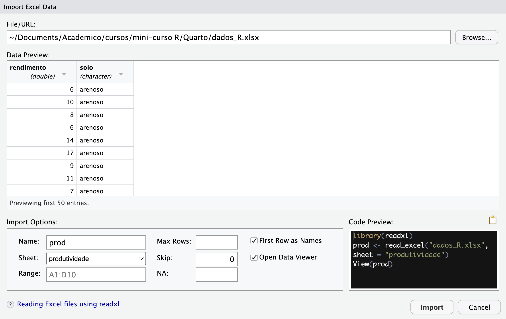
str(prod)tibble [30 × 2] (S3: tbl_df/tbl/data.frame)
$ rendimento: num [1:30] 6 10 8 6 14 17 9 11 7 11 ...
$ solo : chr [1:30] "arenoso" "arenoso" "arenoso" "arenoso" ...Vamos visualizar um boxplot com os dados:
boxplot(rendimento ~ solo, data = prod)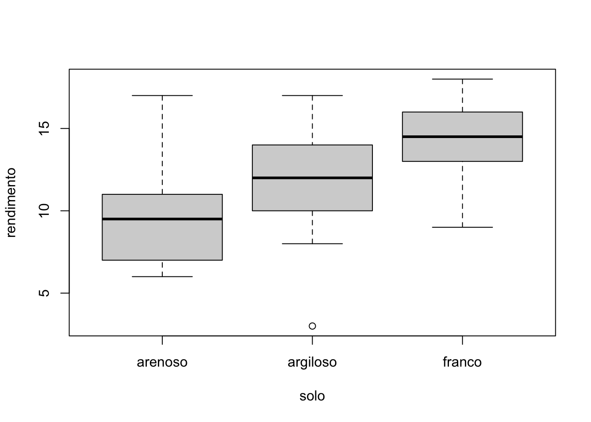
Parece que a produtividade é menor no solo arenoso, intermediária no solo argiloso e maior no solo franco.
Vamos testar isso criando um modelo de ANOVA:
prod.mod <- lm(rendimento ~ solo, data = prod)
anova(prod.mod)Analysis of Variance Table
Response: rendimento
Df Sum Sq Mean Sq F value Pr(>F)
solo 2 99.2 49.600 4.2447 0.02495 *
Residuals 27 315.5 11.685
---
Signif. codes: 0 '***' 0.001 '**' 0.01 '*' 0.05 '.' 0.1 ' ' 1A análise de variância (ANOVA) indicou que o fator solo exerce efeito significativo sobre o rendimento dos grupos analisados (F = 4,24; p = 0,025). Isso significa que os diferentes tipos de solo explicam parte da variação observada na produção, havendo evidências de que pelo menos dois solos apresentam médias distintas de rendimento.
Contudo, a ANOVA não especifica quais grupos diferem entre si, sendo necessário um teste pós-hoc, como o Tukey HSD, para identificar as comparações responsáveis por essa diferença.
TukeyHSD(aov(prod.mod)) Tukey multiple comparisons of means
95% family-wise confidence level
Fit: aov(formula = prod.mod)
$solo
diff lwr upr p adj
argiloso-arenoso 1.6 -2.1903777 5.390378 0.5546301
franco-arenoso 4.4 0.6096223 8.190378 0.0204414
franco-argiloso 2.8 -0.9903777 6.590378 0.1785489O teste de comparações múltiplas de Tukey mostrou que, entre os três tipos de solo, apenas a diferença entre franco e arenoso foi significativa (diferença média = 4,4; IC95% = 0,61 a 8,19; p = 0,020), indicando maior rendimento no solo franco. As comparações entre argiloso e arenoso (diferença = 1,6; p = 0,55) e entre franco e argiloso (diferença = 2,8; p = 0,18) não apresentaram diferenças estatisticamente significativas. Assim, o resultado sugere que apenas o solo franco se destacou, produzindo rendimentos superiores ao arenoso.
ANCOVA
A ANCOVA é um misto entre a ANOVA e a regressão, onde além da variável resposta, temos preditoras contínuas e categóricas. vamos retornar aos dados de grilos, onde além de levarmos em consideração a relação entre pulsos e temperatura, incluímos também a espécie como covariável.
Vamos visualizar graficamente esta relação, incluindo uma linha de tendências com o ggplot2:
ggplot(grilos, aes(y = Pulsos, x = Temperatura, col = Especie))+
geom_point()+
geom_smooth(method = "lm")`geom_smooth()` using formula = 'y ~ x'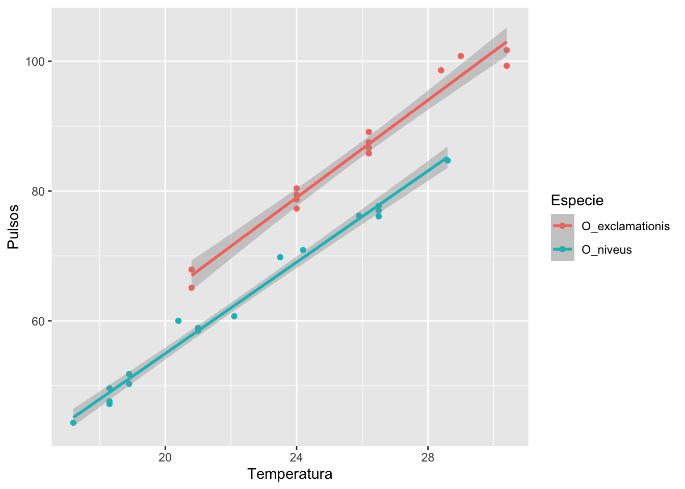
O gráfico mostra a relação entre temperatura e número de pulsos em duas espécies de grilos, O_exclamationis (vermelho) e O_niveus (azul). Em ambas, observa-se um aumento linear dos pulsos com o acréscimo de temperatura, indicando uma forte relação positiva entre as variáveis. As inclinações das retas são semelhantes, sugerindo que as duas espécies respondem de forma parecida ao aumento da temperatura; no entanto, O_exclamationis apresenta consistentemente mais pulsos em todas as temperaturas analisadas, evidenciando uma diferença significativa entre as espécies.
Vamos testar isso com um modelo linear (ANCOVA):
grilos.mod2 <- lm(Pulsos ~ Temperatura + Especie, data = grilos)
grilos.mod2
Call:
lm(formula = Pulsos ~ Temperatura + Especie, data = grilos)
Coefficients:
(Intercept) Temperatura EspecieO_niveus
-7.211 3.603 -10.065 summary(grilos.mod2)
Call:
lm(formula = Pulsos ~ Temperatura + Especie, data = grilos)
Residuals:
Min 1Q Median 3Q Max
-3.0128 -1.1296 -0.3912 0.9650 3.7800
Coefficients:
Estimate Std. Error t value Pr(>|t|)
(Intercept) -7.21091 2.55094 -2.827 0.00858 **
Temperatura 3.60275 0.09729 37.032 < 2e-16 ***
EspecieO_niveus -10.06529 0.73526 -13.689 6.27e-14 ***
---
Signif. codes: 0 '***' 0.001 '**' 0.01 '*' 0.05 '.' 0.1 ' ' 1
Residual standard error: 1.786 on 28 degrees of freedom
Multiple R-squared: 0.9896, Adjusted R-squared: 0.9888
F-statistic: 1331 on 2 and 28 DF, p-value: < 2.2e-16O modelo de regressão linear múltipla mostrou que tanto a temperatura quanto a espécie influenciam significativamente o número de pulsos. A cada aumento de 1 °C, ocorre um acréscimo médio de aproximadamente 3,6 pulsos. Além disso, a espécie O_niveus apresenta, em média, cerca de 10 pulsos a menos que O_exclamationis, mantendo constante o efeito da temperatura. O modelo apresenta excelente qualidade de ajuste (R² = 0,99), explicando quase toda a variação observada nos dados, com resíduos pequenos e distribuídos de forma adequada, confirmando que temperatura e espécie são fortes preditores do número de pulsos
Avaliando os pressupostos de um modelo
Os modelos lineares apresentam pressupostos que precisam ser verificados para garantir a validade dos resultados. Dois deles são fundamentais: a normalidade dos resíduos e a homoscedasticidade. A normalidade dos resíduos significa que os erros (diferença entre valores observados e preditos) devem se distribuir aproximadamente de forma normal, o que assegura que as estimativas de significância sejam confiáveis. Já a homoscedasticidade refere-se à constância da variância dos resíduos ao longo de todos os valores preditos, ou seja, a dispersão dos erros deve ser semelhante em diferentes níveis da variável explicativa. Quando esses pressupostos são atendidos, o modelo linear oferece estimativas mais robustas e interpretações estatisticamente válidas.
Podemos conferir esses pressupostos no R utilizando a função plot() para o modelo:
par(mfrow = c(2,2))
plot(grilos.mod2)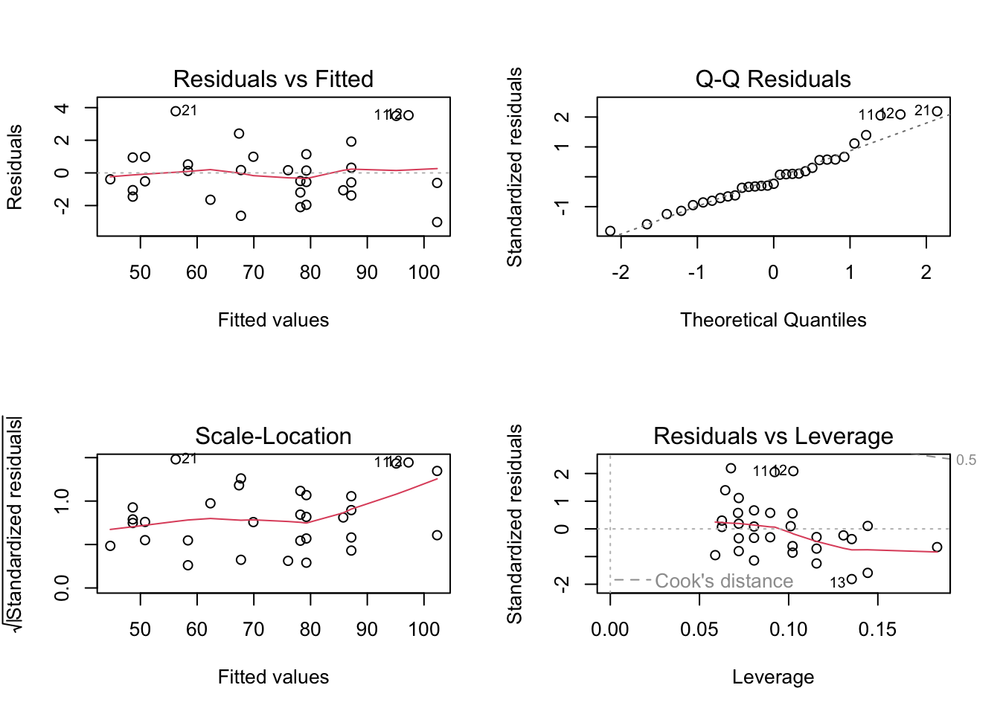
Os gráficos apresentam as seguintes informações:
Residuals vs Fitted → mostra se há relação sistemática entre resíduos e valores ajustados. Deve aparecer uma nuvem aleatória de pontos; padrões em curva ou funil sugerem problemas de linearidade ou heterocedasticidade.
Normal Q-Q → verifica se os resíduos seguem distribuição normal. Os pontos devem se alinhar próximos à linha reta; desvios grandes nas extremidades indicam caudas não normais.
Scale-Location (Spread-Location) → avalia homoscedasticidade, isto é, variância constante dos resíduos. A dispersão deve ser uniforme ao longo dos valores ajustados; se há funil ou tendência, indica heterocedasticidade.
Residuals vs Leverage → identifica observações influentes. Pontos com alto leverage (alavancagem) e grande distância de Cook podem afetar fortemente o ajuste do modelo e merecem atenção.
Referências
Jones, Elinor, Simon Harden, e Michael J. Crawley. 2022. The R book. Third edition. Hoboken, NJ: Wiley.
McDonald. 2014. Handbook of Biological Statistics. Third.
Walker, Thomas J. 1962. “The Taxonomy and Calling Songs of United States Tree Crickets (Orthoptera: Gryllidae: Oecanthinae). I. The Genus Neoxabea and the Niveus and Varicornis Groups of the Genus Oecanthus1”. Annals of the Entomological Society of America 55 (3): 303–22. https://doi.org/10.1093/aesa/55.3.303.
Wickham, Hadley, Mine Çetinkaya-Rundel, e Garrett Grolemund. 2023. R for data science: import, tidy, transform, visualize, and model data. 2nd edition. Sebastopol, CA: O’Reilly Media, Inc.
Wilkinson, Leland, e Graham Wills. 2005. The Grammar of Graphics. 2nd ed. Statistics e Computing. New York: Springer.